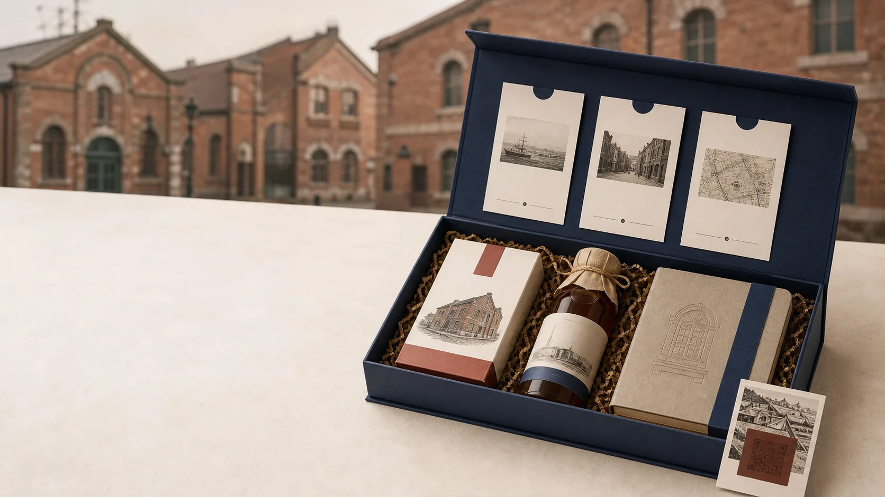
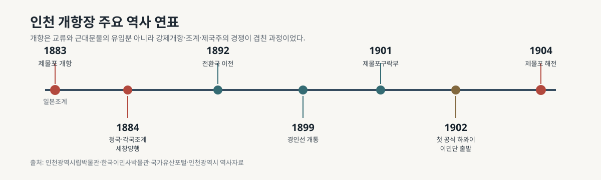
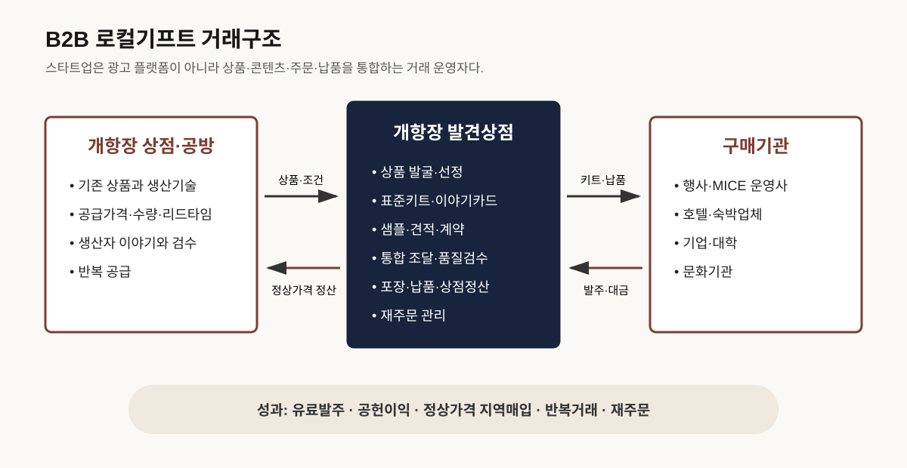
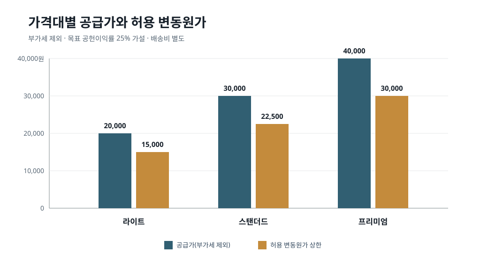
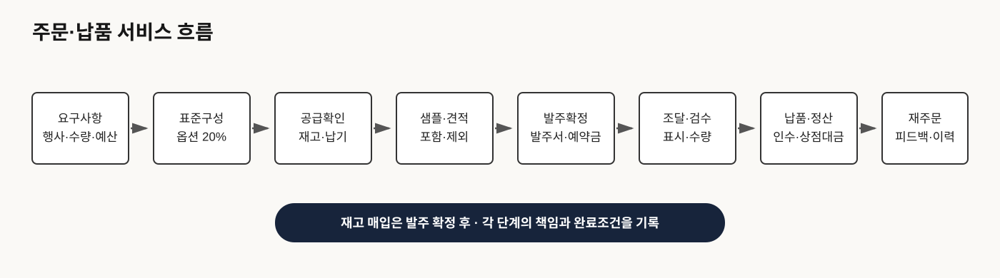

인천 개항장 B2B 로컬기프트
초록
개항장은 근현대문화유산과 현재의 상점·공방이 중첩된 지역이다. 공식연구는 문화유산 운영의 분산, 장소성 조사의 부족과 주민·상인 참여형 시그니처 상품의 필요를 제시한다[1][2][3]. 본 사업은 관광플랫폼이 아니라 개항장 상점의 기존 상품과 검증된 이야기를 표준형 웰컴키트로 구성하여 행사·숙박·기업 고객에게 공급하는 B2B 로컬기프트 스타트업이다. 12주 동안 상점 5곳, 상품 1종, 잠재고객 20곳과 30세트 이상 유료발주 1건을 검증한다.

사업개요
| 구분 | 사업화 내용 |
|---|---|
| 지역문제 | 흩어진 지역상품이 단체구매용 구성·공급조건·콘텐츠로 연결되기 어렵다는 가설 |
| 지불고객 | 행사·MICE 운영사, 호텔·숙소, 기업·대학, 박물관·문화기관 |
| 공급·수혜자 | 개항장 문화지구와 신포시장 도보권의 상점·공방·소규모 생산자 |
| 최초 상품 | 상온 지역상품 2~3개+이야기카드·QR+표준상자·기관 띠지 |
| 기준 가격 | 스탠더드 30,000원(VAT 제외)·33,000원(VAT 포함), 30세트 이상, 배송·전용디자인 별도 |
| 고객가치 | 여러 상점을 직접 관리하지 않고 한 번의 상담·견적·정산으로 정해진 날짜에 납품 |
| 핵심업무 | 상품발굴→공급·표시·권리확인→표준화→영업→조달·검수·납품→정산·재주문 |
| 수익 | 표준키트 판매마진, 로고·외국어·전용카드 제작비, 검증 후 공동상품·선택형 체험 |
| 재고 원칙 | 발주서 또는 예약금 후 매입; 검증 전 대량재고·고정매장 없음 |
| 기술 범위 | 상품·공급가·견적·주문·검수·정산 CRM과 출처 QR; 소비자 앱·AI 추천 제외 |
| 사회성과 | 정상 공급가격 매입액, 참여상점·반복거래·매출분포·검증 콘텐츠 |
상품·대금·책임의 흐름
상품·조건→스타트업
표준화·영업→구매기관
발주·예약금→조달·검수
일괄납품→상점정산
재주문
스타트업은 상품을 모두 제조하는 회사가 아니라, 분산된 지역상품을 단체납품 가능한 하나의 제품과 거래로 전환하는 기획·품질관리·유통사업자다.
단계별 사업화
| 단계 | 기간 | 목표 | 진입조건 |
|---|---|---|---|
| 유료 실증 | 12주 | 상점 5·상품 1·고객 20·30세트 이상 발주 1건 | 납기준수·중대오류 0·공헌이익 양수 |
| 반복판매 | 3~12개월 | 30·50·100세트 표준견적·민간고객·분기 구성 | 재구매·소개 3곳 이상·반복매출 |
| B2B 확장 | 12개월 이후 | 전용 공동상품·정기납품·외국어 구성 | 지원사업·고객·상점 편중 완화 |
매출 시나리오와 생존조건
| 구분 | 계산 | VAT 제외 매출 | 공헌이익¹ | 해석 |
|---|---|---|---|---|
| 첫 실증 | 1건×30세트×30,000원 | 900,000원 | 225,000원 이상 | 운영검증용; 인건비 감당 불가 |
| 초기 반복 | 월 4건×50세트×30,000원 | 월 6,000,000원 | 월 1,500,000원 이상 | 고정비 포함 시 부족 가능 |
| 성장 가설 | 월 8건×100세트×30,000원 | 월 24,000,000원 | 월 6,000,000원 이상 | 공급·운전자금·재구매 검증 선행 |
¹ 목표 공헌이익률 25%의 내부 시나리오이며 배송과 고정비는 별도다. 매출예측이 아니라 생존 가능한 주문빈도를 검증하는 계산표다.
1. 연구배경과 목적
개항장에는 관광앱·박물관·축제·체험이 이미 있어 종합정보 플랫폼의 추가 구축은 중복될 가능성이 크다. 2024년 인천에서는 MICE 행사 6,827건과 참가자 약 320만 명이 집계됐으며[4], 인천관광공사는 MICE 참가자 환대 서비스를 운영한다[5]. 이 수치는 잠재 구매기관에 접근할 환경이 있음을 보여주지만 로컬기프트 구매수요를 증명하지는 않는다. 따라서 실제 담당자의 견적요청과 발주를 검증한다.
관광기념품 체계적 문헌고찰은 상품·사회문화효과·사업생태계·구매행동·만족을 별도 연구축으로 구분한다[9]. 국내 연구도 색상·실용성·품질·휴대와 보관 편의를 구매 고려요인으로 제시한다[10]. 따라서 지역 이미지를 붙이는 데 그치지 않고 지역표지, 현대적 사용성, 품질과 납품조건을 함께 검증한다.
1-1. 시장 정량근거
공개통계는 인천에 단체행사와 기관 구매자에게 접근할 수 있는 접점이 있음을 보여준다. 그러나 행사·참가자·경제효과는 로컬기프트의 발주 건수·구매자 수·시장규모가 아니다.
| 지표 | 공개 수치 | 해석 한계 |
|---|---|---|
| 인천 MICE 행사 | 6,827건 | 선물 발주 건수 아님[4] |
| MICE 참가자 | 약 320만 명 | 상품 구매자 수로 환산 금지[4] |
| 경제적 파급효과 | 약 1조 7천억 원 | 로컬기프트 시장규모 아님[4] |
| KME 참가·상담 | 약 3,000명·4,000건 | 단일행사이며 기프트 상담 아님[24] |
| 관광스타트업·최대자금 | 15개사·3,800만 원 | 선정과 수령을 보장하지 않음[7] |
초기 수요는 구매기관 20곳 접촉, 미팅 10건, 견적 3건과 30세트 이상의 유료발주 1건으로 검증한다.

2. 지역자산과 문제
| 확인된 근거 | 사업상 해석 |
|---|---|
| 문화유산 운영주체 분산[1] | 시설 통합 대신 상품·서사·판매를 연결 |
| 체계적 장소서사 조사 부족[2] | 상품 이야기를 출처와 상인검수로 관리 |
| 상인참여·시그니처 상품 필요[3] | 기존 상품 기반 소량 공동상품 검증 |
| 관광굿즈의 상시판매·IP 요건[6] | 공급 지속성·권리·판매가능성 확인 |
‘구매기관이 지역상품 조달에 불편을 겪는다’, ‘상점이 30~100세트를 반복 공급할 수 있다’, ‘지역 이야기가 구매결정을 높인다’는 아직 확인되지 않은 시장가설이다.
2-1. 개항장의 역사적 맥락
개항장은 서양식 건물이 모인 복고 거리가 아니라 개항, 조계, 무역·금융, 철도, 이주와 전쟁이 중첩된 장소다. 인천은 강화도조약 이후 1883년에 개항했다[14]. 공식 지역자료에도 개항일 표기의 역사적 차이가 소개되므로[23], 상품에는 우선 ‘1883년 제물포 개항’으로 표기한다.
| 시기 | 역사적 사실 | 상품·콘텐츠 적용 |
|---|---|---|
| 1883 | 제물포 개항·일본조계 설정[14][15] | 강제개항의 맥락을 함께 설명 |
| 1884 | 청국·각국조계 설정, 세창양행 설립[15][16] | 경계선·상표 모티프와 제국주의적 성격 병기 |
| 1892~1900 | 인천 전환국에서 다섯 종류 주화 생산[17] | 동전 그래픽은 복제품과 구분 |
| 1899 | 경인선 개통[18] | 승차권·노선도형 이야기카드 |
| 1901 | 제물포구락부 완공[19] | 현존 건축유산 정보 확인 |
| 1902 | 첫 공식 하와이 이민단 121명 출발[20] | 이주의 곤궁과 여정을 낭만화하지 않음 |
| 1904 | 제물포 해전[21] | 전쟁 굿즈 대신 교육형 해설 |

2-2. 역사 콘텐츠 작성 원칙
- 역사 문장마다 출처기관·자료명·확인일 기록
- ‘최초·유일·원형’은 공식 근거가 있을 때만 사용
- 개항을 근대화로만 미화하지 않고 강제개항·외세 침탈·조선인의 삶을 병기
- 일본풍 복고로 전체를 대표하지 않고 청국·각국조계, 조선인 상권, 노동과 이주를 균형 있게 서술
- 전쟁·이민은 오락적 상품화보다 교육과 당사자 존중 우선
- 근대지도[22]와 유물 이미지는 공공누리·저작권·변형 가능 여부를 확인한 뒤 사용
3. 문제정의와 소셜미션
구매기관: 상품 발굴·공급확인·포장·표시·정산·납기를 통합하기 어렵다는 가설. 지역상점: 기관영업·표준견적·대량납품·콘텐츠 제작이 어렵다는 가설.
4. 사업화 역할의 상세범위
- 지역성과 공급능력이 있는 상점·상품 발굴
- 공급가·최소수량·제조·표시·유통기한·권리 확인
- 표준키트와 가격대 설계
- 출처가 표시된 이야기카드·QR 제작
- B2B 샘플·견적·납기 제안
- 통합조달·검수·포장·납품
- 상점정산·재주문 관리
하지 않는 일: 종합 관광앱, 광고순위, 검증 전 대량재고, 고객마다 전부 새로 만드는 무제한 대행, 근거 없는 지역성 홍보.

5. 고객과 가치제안
| 순위 | 고객 | 사용상황 | 가치 |
|---|---|---|---|
| 1 | 행사·MICE 운영사 | 학회·기업회의 | 견적·포장·납품 통합 |
| 2 | 소형 호텔·숙소 | VIP·객실 패키지 | 소량 웰컴키트 |
| 3 | 기업·대학 | 방문단·임직원 선물 | 예산별 표준구성·정산 |
| 4 | 문화기관 | 전시·교육·기념품 | 검증된 지역사 콘텐츠 |
초기 20곳은 민간 행사·숙박 10곳, 기업·대학 6곳, 공공·문화기관 4곳으로 구성해 공공사업 의존을 줄인다.
6. 최초 상품과 공급상점
개항장 웰컴키트 01
- 상온보관 지역 식품·음료 1~2개
- 인쇄·문구·공예 소품 1개
- 출처·제조자·지역 연결 이야기카드
- 상점·개항장 경로 QR
- 기관 로고 교체형 띠지
가격조사 기준
2026년 7월 15일 웹 표시가격을 기준으로 조사했다. 아래 금액은 개별 소비자가이며 실제 재고·현재 판매가·B2B 공급가를 보장하지 않는다. 참여상점의 공급가·최소수량·납기는 별도 협상한다.
인천 로컬상품 표시가격
| 상품 | 표시 소비자가 | 키트 적용 판단 |
|---|---|---|
| 인천 조각 스티커 | 500원 | 저가 보조물 |
| 인천 사진엽서 | 1,000~2,000원 | 이야기카드 중복 확인 |
| 인천개항 엽서 3종 | 1,500원 | 개항장 직접 연계 |
| 인천 풍경 포토메모지 | 2,000원 | 휴대·상온보관 용이 |
| 동인천 자석버튼 | 2,500원 | 소형 구성 후보 |
| 인천 사각연필 | 2,500원 | 문구 보조상품 |
| 포디움126 젤펜 | 3,000원 | 로고 인쇄 여부 확인 |
| 인천개항 편지지세트 | 4,500원 | 지역서사·사용성 결합 |
| 인천누들스탬프투어 세트 | 5,000원 | IP·재판매 동의 필요 |
| 인천 교통 마그넷 6개입 | 6,000원 | 개별포장 확인 |
| 포디움126 드립백 4개입 | 7,000원 | 표시·유통기한 확인 |
| 근대건축물 5종 뱃지 | 8,000원 | 개항장·권리 확인 |
| 북성포구 그립톡 | 8,500원 | 제품안전 확인 |
| 개항장 나잇 메모지 600매 | 10,000원 | 중량·규격 확인 |
| 포디움126 머그잔 | 12,000원 | 파손 때문에 초기 제외 검토 |
| 인천 랜드마크 마그넷 | 13,000원 | 상위구성 후보 |
| 하이파이브 인천 매거진 | 15,000원 | 중량·판권 확인 |
| 인천 우드페이지홀더 | 15,000원 | 프리미엄 후보 |
| 소아인천 차량용방향제 | 22,000원 | 프리미엄 구성 한정 |
| 소아인천 디퓨저 125ml | 29,000원 | 누액·파손·안전 검토 |
출처: 인더로컬 협동조합 공개 상품목록[25]. 낮은 가격만으로 채택하지 않고 지역성·표시·품질·공급능력을 함께 평가한다.
전국 관광기념품 가격 벤치마크
| 2025 수상작 예시 | 유형 | 표시가격 |
|---|---|---|
| 더덕포 60g | 가공식품 | 12,000원 |
| 조선왕조실록 M | 생활용품 | 15,000원 |
| 한국 전통 글리팅 | 생활용품 | 17,000원 |
| AGAIN1500 | 생활용품 | 30,000원 |
| 조선왕실 와인마개 | 생활용품 | 32,000원 |
| 보물 가제수건 선물세트 | 생활용품 | 38,000원 |
| 시간여행·금빛유산 | 가공식품 | 38,500원 |
| 이리오너라 갓 풍경 | 공예품 | 49,000원 |
| 교동의 비주 대몽재 1779 | 가공식품 | 82,000원 |
한국관광공사 데이터베이스 1,978개 상품 중 2025년 사례[26]. 수상 여부는 개항장 발주수요의 증거가 아니다.
B2B 도매·MOQ 공개 사례
| 공개 상품 | 소비자가 | 도매가·조건 | 시사점 |
|---|---|---|---|
| 재생면 핸드타월 | 6,000원 | 3,500원·기성 MOQ 50·벌크·VAT 별도 | 소비자가와 공급가 분리 |
| 페이스타월 30수 | 12,000원 | 5,000원·기성 MOQ 50·벌크·VAT 별도 | 포장 없는 도매가 |
| 페이스타월 40수 | 14,000원 | 5,500원·기성 MOQ 50·벌크·VAT 별도 | 사양별 원가 차이 |
| 타월 2매+박스+띠지 | 미표시 | 12,000원·MOQ 200·VAT·맞춤띠지 별도 | 맞춤비 분리 |
| 타월 5매+크라프트박스 | 미표시 | 30,000원·MOQ 100·VAT·스티커·띠지 별도 | 완제품 MOQ 위험 |
2025년 타지역 B2B 카탈로그 사례[27]이며 개항장 상품의 도매율로 전용하지 않는다.
제안 판매가와 허용원가
| 등급 | 공급가(VAT 제외) | 청구가(VAT 포함) | 허용 변동원가 상한 | 용도 |
|---|---|---|---|---|
| 라이트 | 20,000원 | 22,000원 | 15,000원 | 교육·소규모 행사 |
| 스탠더드 | 30,000원 | 33,000원 | 22,500원 | 초기 주력 |
| 프리미엄 | 40,000원 | 44,000원 | 30,000원 | VIP·기관방문 |
허용 변동원가는 목표 공헌이익률 25%의 내부 가설이다. 상품매입·포장·인쇄·수수료·변동인건비를 포함하고 배송은 별도다.

표시가격 구성 스트레스 테스트
| 구성안 | 표시가 합계 | 상품매입 예산 | 필요 조정 | 판단 |
|---|---|---|---|---|
| 라이트: 드립백+개항엽서+연필 | 11,000원 | 10,500원 | 4.5% | 공급가 확인 후 가능 |
| 스탠더드: 드립백+편지지+노트 | 19,000원 | 16,000원 | 15.8% | MOQ·도매가 협상 필요 |
| 프리미엄: 머그+우드홀더+편지지 | 31,500원 | 22,000원 | 30.2% | 구성 변경 우선 |
상점 선정 100점 기준
| 항목 | 배점 |
|---|---|
| 지역성과 근거 | 25 |
| B2B 선물 적합성 | 20 |
| 품질·표시·보관 | 15 |
| 공급능력 | 15 |
| 가격·마진 | 15 |
| 협업·검수 | 10 |
7. 비즈니스 모델
수익: 표준키트 판매마진 → 맞춤 띠지·외국어 카드 제작비 → 공동기념품 → 선택형 체험. 광고·앱 구독·데이터 판매는 제외한다.
| 요소 | 내용 |
|---|---|
| 구매고객 | MICE·행사, 호텔, 기업, 대학, 문화기관 |
| 공급·수혜자 | 개항장 상점·공방 |
| 채널 | 직접영업, 샘플카탈로그, MICE·호텔 네트워크 |
| 핵심활동 | 소싱·검증·표준화·영업·조달·정산 |
| 임팩트 | 정상가격 매출, 반복거래, 지역콘텐츠 자산 |
8. 네 가지 가설
| 가설 | 검증 | 통과기준 |
|---|---|---|
| 페르소나 | 구매담당 10명 | 5명 이상 최근 단체선물 조달경험 |
| 문제 | 소싱·거래·예산 질문 | 5명 이상 구체적 불편 보고 |
| 솔루션 | 샘플·수량별 견적 | 견적요청 3건·유료발주 1건 |
| 시장 | 잠재고객 20곳 영업 | 미팅 10건·구매시점 확인 |
9. 12주 MVP
상점 5곳→4~6주
표준키트·샘플→7~10주
20곳 영업·견적→11~12주
납품·평가
목표는 샘플 5세트, 미팅 10건, 견적 3건과 30세트 이상 유료납품 1건이다. 상세 작업은 12주 실행 WBS에 수록했다.


10. 성과와 중단기준
| 영역 | 판단지표 |
|---|---|
| 사업 | 미팅 10·샘플 5·견적 3·유료발주 1·공헌이익 양수 |
| 운영 | 30세트 이상·납기 100%·중대오류 0 |
| 사회 | 상점 5·반복공급 3·정상가격 매입액·매출분포 |
| 중단 | 견적 없음, 공헌이익 음수, 반복공급 3곳 미만 |
11. 기술·위험·지원
초기 기술은 상품·공급가·고객·견적·주문·검수·납품·정산 관리와 QR 콘텐츠에 한정한다. 자체결제, AI 추천과 소비자 앱은 제외한다.
- 공공기관 의존: 민간 행사·숙박 구매자를 절반 이상 확보
- 일회성 대행: 표준구성 80%, 맞춤 20%
- 재고: 발주서·예약금 후 조달
- 역사왜곡: 공식·학술근거와 상인검수
- 표시위반: 제조·원산지·유통기한 전수검수
식품 포함 시 최소 판매단위 표시기준과 부당 표시·광고 기준을 상품선정 단계에서 확인한다[11][12]. 공공기관 판매는 조달청의 창업·벤처기업 지원과 단계별 길잡이를 참고할 수 있으나[13], 지원정책의 존재를 납품수요로 간주하지 않는다.
현재는 TIPS보다 인천 관광스타트업·예비관광벤처·로컬크리에이터가 적합하다. 12주 일정과 지원제도 비교는 실행·지원사업 통합문서에 수록했다.
12. 결론
참고문헌
- 민경선(2025), 개항장 근현대문화유산 활용. 인천연구원
- 김창수, 개항장 장소자산 스토리텔링. 인천연구원
- 인천연구원(2026), 정책로드맵 2040. 원문
- 인천광역시(2025), 2024 MICE 통계. 공식 자료
- 인천관광공사, MICE 환대서비스 업무. 공식 자료
- 인천관광기업지원센터(2023), 관광 팝업 입점공고. 공고
- 인천광역시·인천관광공사(2026), 인천 관광스타트업 공모. 공식 자료
- TIPS, 프로그램 개요. 공식 안내
- Shen·Lai(2022), 관광기념품 체계적 문헌고찰. DOI
- 강민지·전성복(2007), 관광기념품 활성화 연구. KCI
- 식품 등의 표시·광고에 관한 법률 시행규칙. 국가법령정보센터
- 식품 부당 표시·광고 관련 기준. 국가법령정보센터
- 조달청(2026), 업무계획·공공조달 진입지원. 공식 안내
- 인천시립박물관, 1883년 개항과 조계. 공식 전시
- 인천시립박물관, 각국조계석. 유물해설
- 인천시립박물관, 세창양행 상표. 유물해설
- 인천시립박물관, 인천 전환국과 주화. 유물해설
- 인천광역시, 경인선 개통 사진. 역사자료
- 국가유산청, 구 제물포구락부. 국가유산포털
- 한국이민사박물관, 첫 공식 하와이 이민단. 전시해설
- 인천시립박물관, 제물포 해전과 바리야크호 깃발. 유물해설
- 인천시립박물관(2025), 인천 근대지도 1883~1945. 학술조사
- 인천광역시(2024), 개항일 표기의 역사. 굿모닝인천
- 인천광역시(2024), 2024 코리아 마이스 엑스포 성과. 공식 보도자료
가격조사 추가자료
- 인더로컬 협동조합, 인천 로컬상품 목록. 판매자 페이지
- 한국관광공사, 대한민국 관광공모전 기념품부문 역대 수상작. 공식 데이터베이스
- 주식회사 제클린(2025), 리피트 상품 안내 Version 2.1. 공개 카탈로그 PDF